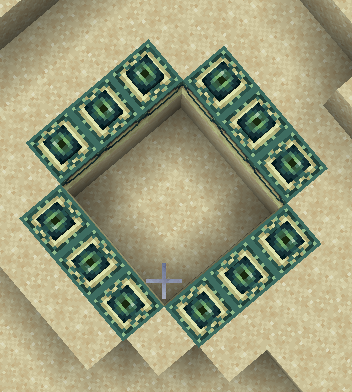

Web Development · 2024
Website informasi pariwisata Danau Toba yang menyajikan informasi destinasi wisata, galeri, dan detail lokasi dengan data yang dikelola melalui database MySQL.

OVERVIEW
Membangun website informasi pariwisata yang membantu wisatawan menemukan destinasi menarik di sekitar Danau Toba.
Full-stack Developer — merancang database, membangun backend PHP, mendesain UI, dan testing.
± 2 bulan (Oktober – November 2024).
Selesai — versi 1.0 telah dirilis.
FITUR
Menampilkan berbagai destinasi populer di sekitar Danau Toba lengkap dengan deskripsi dan foto.
Pengguna dapat mencari destinasi berdasarkan nama atau kategori.
Galeri gambar destinasi dengan tampilan grid responsif.
Panel admin untuk mengelola data destinasi dengan autentikasi login.
TEKNOLOGI
Backend aplikasi
Database
Struktur halaman
Styling
Silakan hubungi saya untuk diskusi atau kolaborasi.